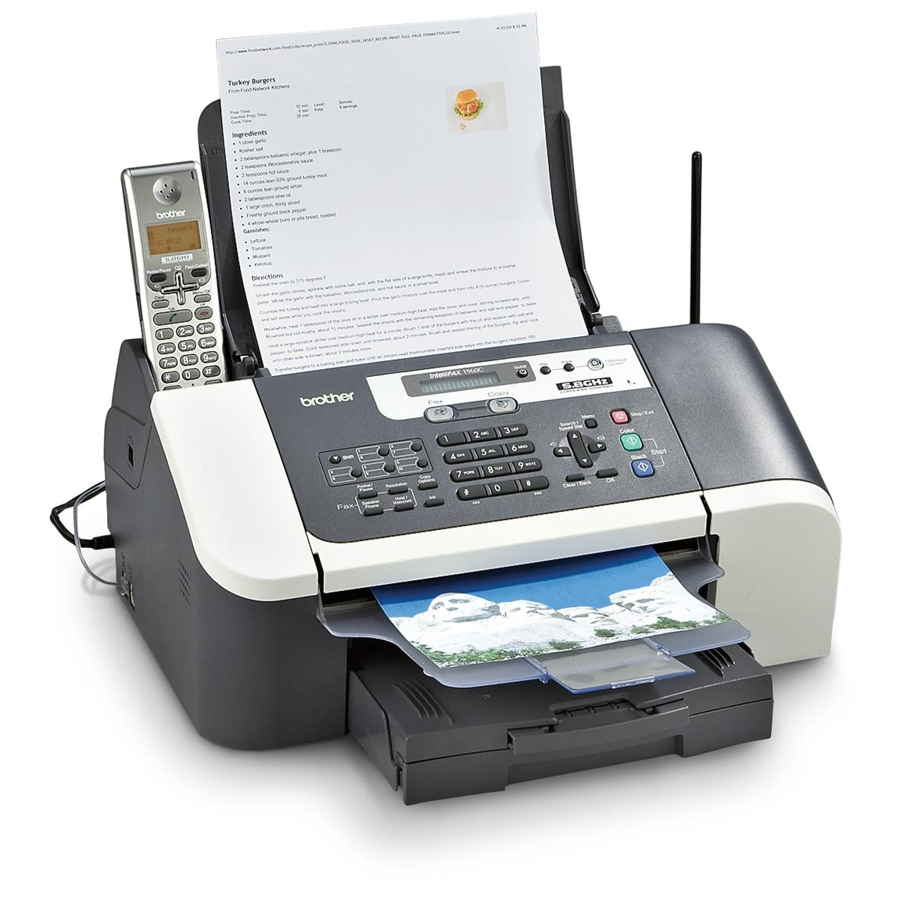

Got Fax?
 Time to read: 5 min
February 23, 2016
I usually hardline things like below but in a pinch there are a few serices offeringa “free fax” with limitations and ads(or minimal cost) or a subscribe service.
The smartfone apps that do this take a hi resolution picture, try to ocr it I believe, and then fax from there through some service. Both are great ways to enjoy safe fax.
I like to use a machine. In case your wondering about how I manage with NO LANDLINE to work a FAX machine….
uh huh.
Phone line has gone the way of the dinosaur.
uh huh.
You cant put that here…(you need some sort of special setup….)
WRONG!
PSST. I use an Obihai202 box..
Jan 2018 update:
Anveo services are degraded to hell and google doesnt seem to work by itself as a service to call people from. I am greatly disappointed. I had great difficulty w skype and had no viable alternative for months to call internationally with.Not happy.


[2 phys lines, 4 meta-lines w distinctive ring, FULL FAX speeds and wireless net capable]
..and ANVEO for the faxing…and boy do I fax….cheapest line I EVER EVER paid for.
If you have no cell, you will pay less than $7 per month to yack-a-mole out of ALL your relatives. Side benefit is that all SIP-based apps tap into the box and make your phone ring too!
So if someone has your number, then they do the following from a PC:
There is an SIP Broker whitepage CHEET SHEET directory.
Lookup your network(anveo/callcentric) and it shows the special code to put into ekiga [twinkle,linphone] before the VOIP number.
Bobs your uncle.
NOW, this is OUTBOUND and SIP client only, and WILL NOT WORK with SKYPE.
Your PC just rang a physical phone without a BILL.
SKYPE, on the other hand WILL CHARGE YOU for this feature because its a PHONE NUMBER and not a user id. SIP could care less.
Of course you can always connect PC->PC…(including looking up handles). And apparently it works in reverse.
You have a normal PTSN and you want to call someone’s VOIP (virtual number):
Call the ACCESS number(close to you), enter the network [cheat code]and VOIP number
and bobs your uncle. FREE CALL.
Most Phone companies offer unlimited local or free local calls. ESPECIALLY hotels.
The ACCESS number takes care of the rest. Generally, no long-distance charges this way. Your physical phone rang a [not-so] physical one. Now the begging question is why you’d do this.
PTSN-> VOIP doesnt really CARE.
Its a number to number call, right? Well, some networks are inbound only and cant call you back. So while they can take internet calls, they cant MAKE calls to non-internet numbers(which is weird).
Skype if you want, but SIP is the OPEN future. And YES you can scramble the calls. You have to run the zPhone software in the background on BOTH sides. The downside is that VOIP numbers, thought dirt ass cheap, cost some money. Calling non-VOIP numbers takes some money. And once you have a VOIP number, generally, you want outbound also(see anveo). Regardless of that fact, its a number. There is no difference in a VOIP and a regular number when its hooked up right.
So why pay thru the nose for a line from the PHONE company?
YOUR already PAYING for your internet!! ( and nobodys the wiser…)
TELEMARKETERS? What TELEMARKETERS? Ban em with a DOO DOO DOO disconnected tone after you have THIER number. Did I say I WUV ANVEO YET?
Dont get me wrong, a CELL is GREAT! But you pay HOW MUCH? Either pay full price for the phone and eat the bullet or drop your current provder and unlock online at some schmuck you feel cozy with.You can be current with your bill or not, it doesnt matter. Unlock.
Wait out the unlock process, dont waste $$ on a burner tracfone. (At least on apple you can make burner numbers, so having the hardware is pointless…)
Once done, you can drop in a global SIM if you want.
You dont have to wait out the two years or whatever like ATT and others are demanding. FUCK EM.
Switch to someone else like straight talk.
Save some $$$.
As per your old contract, I waited until ATT fucked me and killed the cell service.
THIER FAULT.
THEY EAT the bill and FEES for slamming my cell in court.
So I win AND get to unlock the phone for next to nothing. I dont have to pay for a new unlocked phone, which can be upwards of $500. They cant collect a dime in fees. Aint that a BITCH?
And its prepaid, so I can canx the number when I want, switch SIMs, even just use the phone via the internet(this would kill sms/video calls and the phone app) instead of 3 and 4G. No extra smartphone fees for EWE!